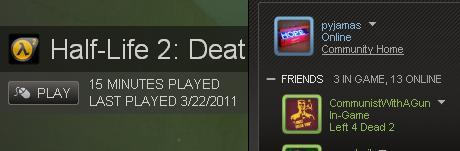

Fix’d. Seriously, you have to be blind to not see the difference.
Really wished they could have had similar openess in a city. Would have been awesome.

Fix’d. Seriously, you have to be blind to not see the difference.
Really wished they could have had similar openess in a city. Would have been awesome.
I don’t see where you get “use interesting tactics” from. All you could really do was cloak and sneak around, which you’re still perfectly capable of doing in Crysis 2.
Crysis 1 was only Crysis 2 in slowmotion. Walk 500metres to the right/left. Wait for the koreans to find you and then follow you those 500 meters. Then shoot everyone one by one.
Try different tactics then.
EDIT: Or maybe you just don’t like open games. Personal preference.
First, this is using the same silly reasoning as another thread on this forum (maybe discussion about Halo 2 or such, I don’t recall). If you want to do that, you can say that Doom=Half Life=CoD=Crysis=Bulletstorm=Bioshock because you run and shoot things. Stupid analogy, the differences are in the implementation (i.e. approaching that group of Koreans stealthed, and take them out quietly, or in armor mode ready to lay waste, or speed and dance around them, etc).
The more I play Crysis 2, the less impressed I am. The C.E.L.L enemies seem dumber than the Koreans, the lack of quicksave (or any saving on the player’s part) is annoying as fuck, and the inability to skip cutscenes is a poor design choice. Set some flag in a config setting that stores whether a cutscene has played at least once, and after that, let me skip them, damnit.
As for the [COLOR=‘Red’]red text, do people not explore game menus/options/settings anymore? I know Someonerandm was surprised to hear about the suit shortcuts…which were already in Crysis 1.
Crysis 2 still has the “hold the mouse wheel and move where you want to go” option… and Crysis 1 had the “press 1 button to enable stealth” option, it was called Suit Shortcuts
I’ll say that that should have been shown to the player. And then maybe they could show what those shortcuts are.
Been replaying Warhead recently though. God its so much better than Crysis 2.
lol
I’ve been playing Crysis 2 quite a bit now that I have it, and I do like it. But I still don’t think Crysis should be in the title. Sometimes the AI is better than the first by a long shot, but other times, they just stand there talking to one another, even when I shoot.
I thought that was just a problem from the leak, but somehow they’ve carried over to the full game with the patch?
At least Crytek waited until they fixed quite a bit of glitches and bugs to release the first Crysis patch for the first game. And an odd glitch, I can’t bash after i load my game, until like 4-5 minutes in.
Maybe It’s because I’m on the hardest difficulty, but I don’t feel very “empowered” in Crysis 2 like I did in the first game. Sure, Armor mode absorbs a lot more, but It seems like I just use it to fall back to cover without dying. And the Aliens are kind of cool in how they move, they remind me of the Skaarj from the first Unreal, but they are too easy to kill. I feel like the regular humans are more of a challenge then these so-called “powerful” aliens.
Oh, interesting little tidbit about lack of mod tools and a level editor for Crysis 2: someone asked Nathan Camirillo (or whatever his name is) on a tweet why Crysis 2 didn’t have either of those, and he responded saying that it’s hard to do that when your under strict rules from the publisher - but a couple of days later, his tweet got removed.
Get out
lol
ITT people who obviously haven’t played the game.
Also, for those of you who are complaining that you’re a “nobody” who knows how to use the suit. Finish the fucking game, the ending will shut you up.
He was talking about Crysis 1. Also, to elaborate, I’m not using open to mean a large sandbox where you can go do whatever you want, I’m using open within the context of a non-sandbox FPS. I thought that was obvious, but hey, this is the internet.
Crysis 1 is definitely MUCH more open than Crysis 2. Crysis 2 supposedly stresses “vertical” gameplay… Crysis 1 had that too, where there were often hills and buildings and guard posts where you could flank enemies from above. In fact, it was much more fun in Crysis 1 IMO.
Idk, maybe I’m just biased because I loved the island setting a LOT more than New York, but I still feel like the city in Crysis 2 could have been made much more interesting than it currently is.
After replaying more of Crysis 1 I feel confident in saying that it’s one of my favorite video games of all time, and Crysis 2 comes nowhere close to that. It’s still a good game, just much worse than Crysis 1 (all in my opinion of course).
It’s open, but it’s the worst open I’ve ever seen.
I’ve stated my opinion on this many times before. Probably haven’t been to clear on this particular forum though. Crysis’s worst aspect was it’s openness imo. The AI was overly complicated to work in large dynamic environments for ends that didn’t justify the means at all, because 85% of the time they’re bumbling around like fucking idiots (the “HURR DURR HOCKEY SOCKEY WESTERNU BASTERDU” voice acting didn’t help either). The maps were fucking huge, but the artists didn’t seem to go through much effort to fill them with anything interesting. They seemed to spend all their time on point A and point B and just scribbled in between. Most of the Crysis environment consisted of copypasta filler and a fuckload of prefabs. Not a lot of variety at all. What good is an open level if a majority of it is filler? The level design in Crysis 1 had real problems with purpose and direction. Crysis 1 was open at a great cost. That’s why I lold. Imo, praising Crysis for openness is like praising Zack Snyder for his use of licensed music in his films.
You’re totally right.
PS: I too was dissapointed by the lack of vertical combat in crysis 2. I wanted a game with “city freedom” akin to games like Spiderman and assassin’s creed. I wanted to hang on the side of a 20 story building with one arm and shoot with the other. I wanted to be able to scale the empire state and snipe people from it. I knew as more info on the game started to be released that it wouldn’t happen. I just want a shooter with 100% freedom, and GOOD freedom at that.
Well then, we have a difference of opinion that will never be bridged. Lets move on.
first off, did you just shop up an image, or does your steam support shadows on the window boxes that mine doesn’t?
It’s hard to make a game like that, which is why it has literally never happened. Far Cry 2 was the closest thing you could get to “total freedom shooter”, but even then there were limitations set in place by the devs. Hell, crysis 1 wasn’t even close to total freedom, it was actually a linear game with the illusion of being a sandbox.

See Someonerandm, you’re biased because you appear to think linearity is a bad thing. That’s why you’re incapable of accepting other’s opinions about games. In the Bulletstorm thread your main complaint that I saw was that it was a linear game, but there’s nothing wrong with linearity. I can’t imagine Bulletstorm as a nonlinear game, it just wouldn’t work. Crysis 2 definitely got more linear, but it basically took out all the bullshit copypaste filler that Xalener pointed out was in the original. It wasn’t necessary. You can still approach scenarios in Crysis 2 multiple ways, so it’s not like it’s a straight CoD-style shooter.
Pyjamas, stop being a douche. Of all the things to be arguing over…just take his word that he’s played the damn game.
Also;
It’s probably a windows vista/7 thing. Doesn’t happen on xp. Totally forgot that i am too afraid of change to move up to a recent OS ;_:
datlist…
Founded in 2004, Leakfree.org became one of the first online communities dedicated to Valve’s Source engine development. It is more famously known for the formation of Black Mesa: Source under the 'Leakfree Modification Team' handle in September 2004.